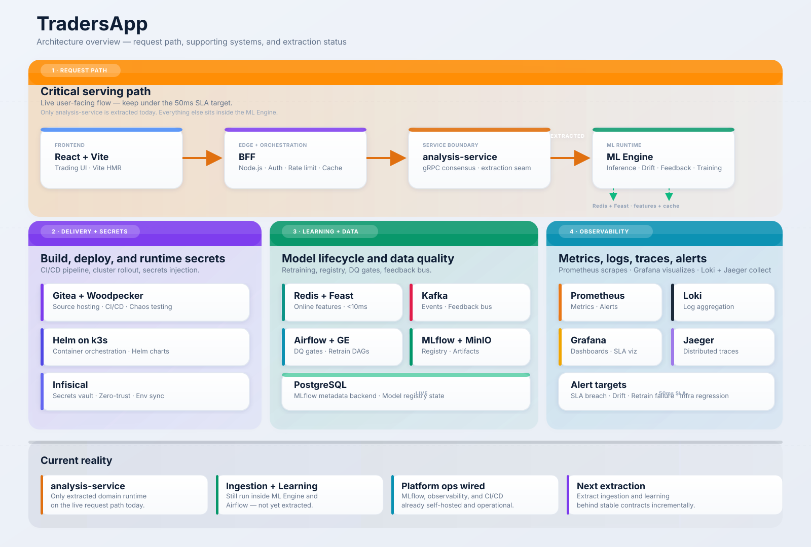
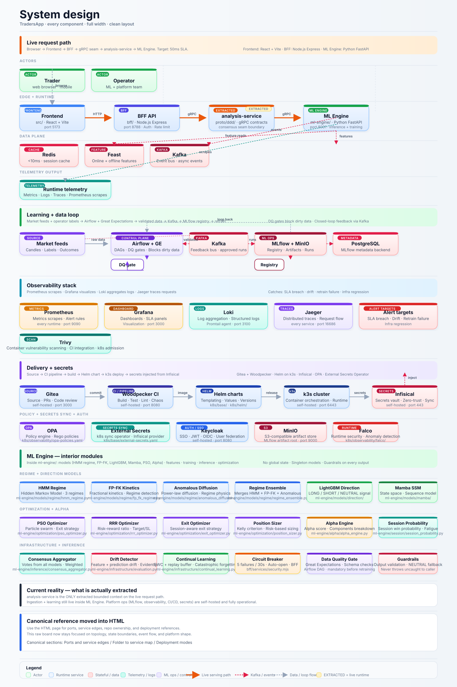
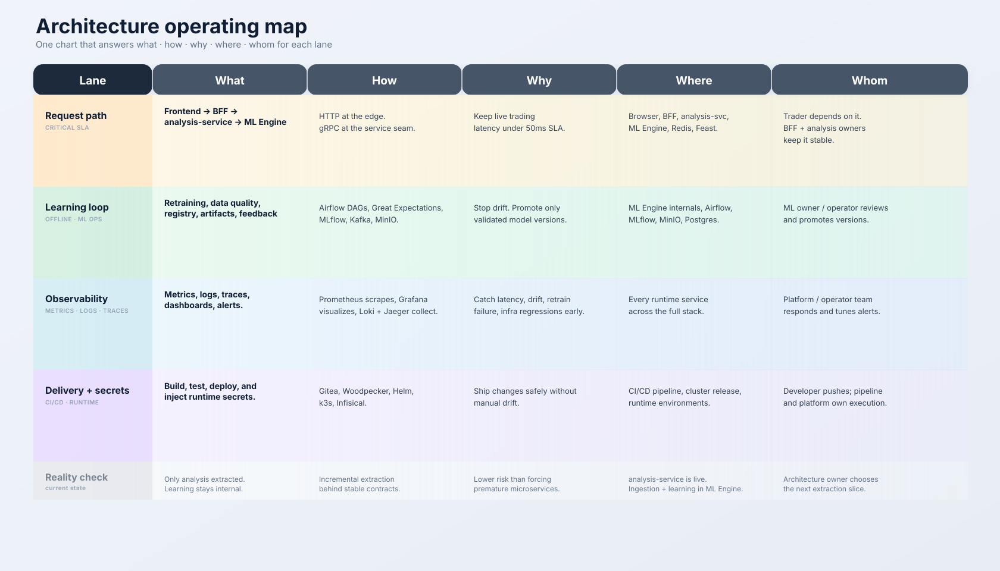
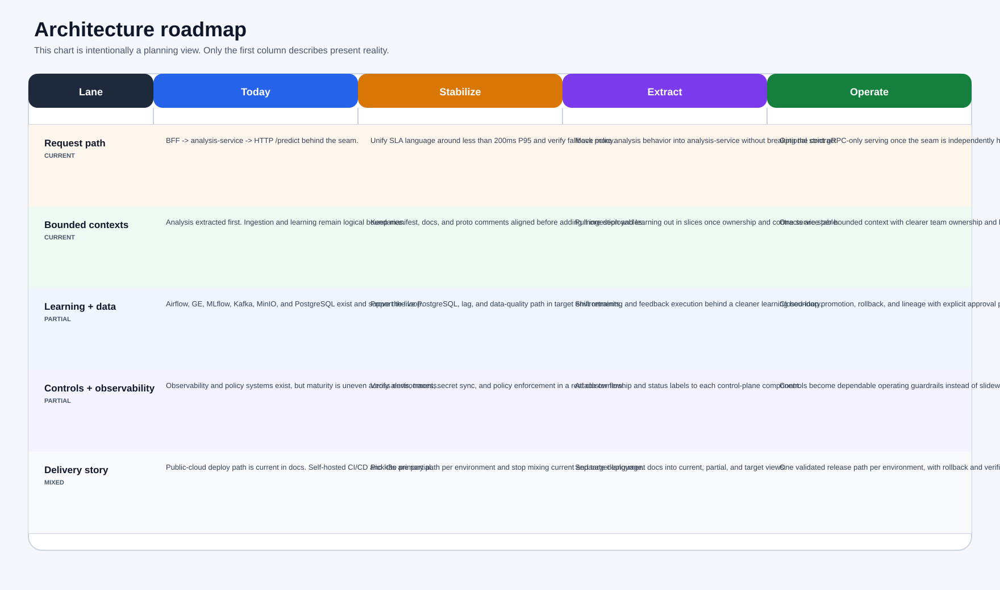

TradersApp is no longer a simple app. It is a self-hosted trading ML platform with a live low-latency request path,
an extracted analysis-service seam, automated learning and data-quality loops, full observability, and self-hosted delivery.
analysis-service is the only extracted domain service on the critical path.
Everything else still stabilizes behind that seam instead of being broken into premature microservices.
This platform optimizes for low-latency serving, cautious extraction, self-hosted ops, and safe ML evolution. It intentionally favors stable contracts and shared control planes over premature service sprawl.
Read this diagram first. It shows the request path, supporting systems, and current extraction reality at a glance.
This is the fastest orientation view: who serves traffic, where state lives, and which platform systems surround the request path.

This is the detailed board view in the style of a classic system-design map. It shows actors, service boundaries, stateful systems, event flow, observability, and delivery controls on one canvas.
Use this when you need the full platform shape in one frame: request path, stateful dependencies, async flow, and platform controls.

This is the single chart for what / how / why / where / whom across request serving, learning, observability, delivery, and the extraction strategy.
This section translates the architecture into operating intent so the page is useful for decisions, not just diagrams.

This is the evolution view of the same platform. Read it left to right as current reality, hardening, extraction, and long-run operating state.
This is the strategic lens: what is already live, what is being hardened now, and what should stay deferred until the seams are stable.

These are the runtime truths that matter when reading the rest of the platform.
If someone only remembers one thing from this page, it should be these three flows: user serving, data and learning, and platform operations.
User traffic enters through the React frontend, lands at the Node.js BFF, crosses the gRPC seam into analysis-service, and resolves through the Python ML Engine.
Redis and Feast back the low-latency feature path, Kafka carries event streams, MLflow owns model history, and Airflow enforces scheduled quality and retraining workflows.
Prometheus, Grafana, Loki, and Jaeger provide live visibility, while Gitea, Woodpecker, Helm, k3s, and Infisical form the self-hosted delivery and secrets path.
This table maps the platform by responsibility instead of by repo folder.
The point here is ownership clarity. Each layer answers a different operational question even if some code still lives in the same deployable.
| Layer | Components | What it does now |
|---|---|---|
| Experience | Frontend (React, Vite) |
Trading UI, dashboards, and operator workflows. |
| Edge + orchestration | BFF (Node.js) |
Authentication, session control, anti-corruption layer, and API composition. |
| Domain service | analysis-service (gRPC) |
Stable consensus contract and extraction seam for the first bounded context. |
| Core ML runtime | ML Engine (Python) |
Inference, training, drift detection, feedback, and monitoring endpoints. |
| Low-latency data plane | Redis, Feast | Online features and cache-backed reads for critical request paths. |
| Event plane | Kafka | Market data, model signals, and feedback topics. |
| MLOps plane | MLflow, MinIO, PostgreSQL | Experiment tracking, model registry, artifacts, and lineage metadata. |
| Control plane | Airflow, Great Expectations | Data validation, scheduled monitoring, and retraining orchestration. |
| Observability plane | Prometheus, Grafana, Loki, Jaeger | Metrics, dashboards, logs, traces, and alerts. |
| Delivery plane | Gitea, Woodpecker, Helm, k3s, Infisical | Build, test, sign, deploy, and inject runtime secrets. |
This is the important DDD truth: there are contracts for multiple contexts, but only one is fully extracted on the live request path today.
This table shows where the architecture is deliberately conservative. Context boundaries exist before all of them become independent services.
| Context | Service boundary | Status | Notes |
|---|---|---|---|
| BFF orchestration | bff |
Live | Owns frontend-facing contracts and translation logic. |
| Analysis | analysis-service |
Live extraction seam | gRPC is implemented and deployed; internals still proxy ML Engine /predict. |
| Ingestion | ingestion-service contract |
Logical only | Ownership is defined, but runtime still lives inside ml-engine packages. |
| Learning | learning-service contract |
Logical only | Retraining, drift, and DQ loops are live, but still run inside ML Engine and Airflow DAGs. |
| Platform ops | Infra stack | Live | Observability, CI/CD, secrets, and Helm rollout are already wired. |
These are the sequences that matter operationally: request path, learning, observability, and delivery.
Architecture only matters if the key loops are reliable. These are the four sequences that decide latency, learning quality, and deployment safety.
analysis-service over gRPC.analysis-service resolves consensus through the ML Engine./metrics from runtime services.Use the right entry path depending on whether you are validating local end-to-end behavior, control planes, or cluster rollout.
Not every workflow should hit the full cluster. These entry points describe the fastest correct environment for each kind of validation.
| Mode | Entry point | Use case |
|---|---|---|
| Full local stack | docker-compose.yml |
End-to-end local bring-up with frontend, BFF, ML Engine, MLflow, Kafka, and observability. |
| MLOps-only local stack | docker-compose.mlflow.yml |
Dedicated MLflow + MinIO + PostgreSQL workflow and registry testing. |
| Airflow control plane | docker-compose.airflow.yml |
Data-quality, monitoring, and retraining DAG validation. |
| Cluster deploy | k8s/helm/tradersapp |
k3s production-style rollout with Helm. |
analysis-service.{kind=link}
{kind=link}
{kind=link}
{kind=link}
{kind=link}
{kind=link}
{kind=link}
{kind=link}
{kind=link}
{kind=link}
{kind=link}
{kind=link}